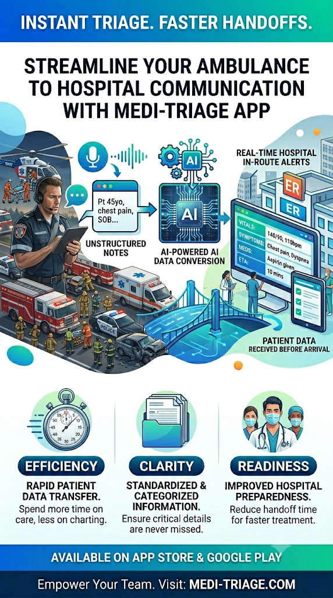

Smart Voice & Simulation
SpeechRecognition, voice visualizers, offline fallbacks, and one-click case simulations.
FEATURED CASE STUDY
An AI-assisted healthcare workflow concept designed to turn unstructured paramedic reports into a clean, standardized digital handoff for emergency department staff.
01 / OVERVIEW
The concept begins with a paramedic relaying ATMIST details during transport using voice-to-text. The system then structures that information into a standardized digital handoff card so the receiving emergency department can review a concise summary before the ambulance arrives.
The project is centered on healthcare operations, data integrity, and AI-assisted organization rather than replacing clinical judgment. Its purpose is to make a fast-moving handoff easier to read, verify, and act on.
02 / WORKFLOW
A simple data journey connects field reporting with the receiving emergency department.
Paramedic relays patient and incident details during transport.
The report is mapped into standardized ATMIST fields.
Clinical rules and validation help surface notable data.
The receiving team gets a readable pre-arrival summary.
03 / DATA MODEL
The application organizes incoming information around a high-reliability emergency handover structure.
Clear patient identification details.
Time of incident compared with expected arrival.
What happened or what medical event occurred.
The primary clinical problem being reported.
Recent vital signs and important trends.
Interventions already performed in the field.
ADDITIONAL HANDOFF FIELD
A dedicated statement records whether the patient improved, remained the same, or deteriorated following treatment.
04 / ARCHITECTURE
The concept combines capture, parsing, clinical guardrails, secure transmission design, and sign-off.
SpeechRecognition, voice visualizers, offline fallbacks, and one-click case simulations.
Maps incoming reports into Age, Time, Mechanism, Injuries, Signs, and Treatment fields.
Prototype physiological rules include shock index calculations and age-sensitive thresholds.
Explores encrypted transport concepts including TLS 1.3, Curve25519 key exchange, and randomized IVs.
Digital paramedic certification and electronic audit-trail concepts support accountable handoff.
Connects EMS voice and telemetry through parsing, alerts, signatures, and secure transmission.
Prototype note: Security and healthcare-compliance features shown here describe the project architecture and design intent; they are not presented as an independent certification of regulatory compliance.
05 / INTERACTIVE DEMO
The interactive prototype includes sample simulation cases. Load a case, then use the extraction action to see how unstructured information is organized into output data.
Launch Medical Triage Handoff Simulation ↗